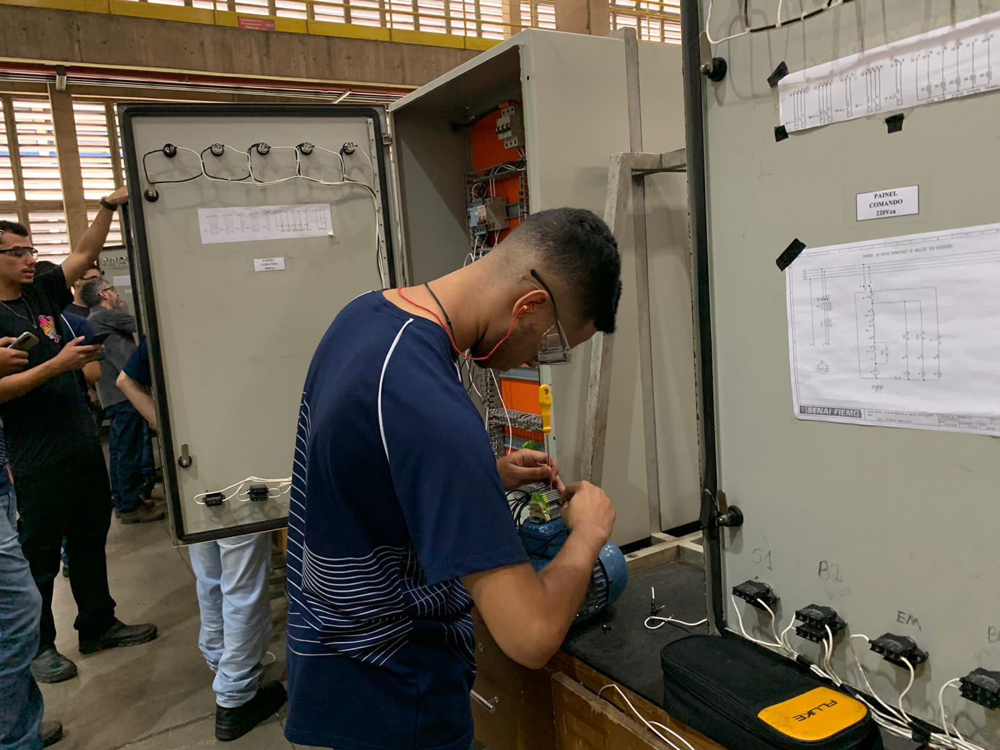
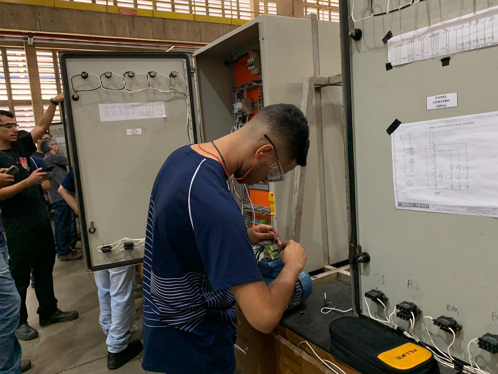

O curso técnico em Elétrica do Inova Cursos forma profissionais altamente qualificados para atender às crescentes demandas do mercado de trabalho na área elétrica. Com um currículo atualizado e prático, o curso oferece uma sólida formação em instalações elétricas, automação, eletrônica industrial e demais áreas relacionadas. Seu foco está em preparar os estudantes para assumirem cargos de destaque em empresas do setor elétrico, bem como capacitá-los para empreender em seus próprios negócios.

Turno: Noturno
Tipo: Técnico

Avaliação: 4.5/5

Duração: 18 meses
O técnico em elétrica é responsável por promover a inovação e a sustentabilidade no campo da eletricidade, estimulando práticas empreendedoras e socialmente responsáveis. No dinâmico mercado de trabalho atual, é essencial estar bem preparado, ser proativo e ter uma mentalidade inovadora para liderar projetos com criatividade e competência.